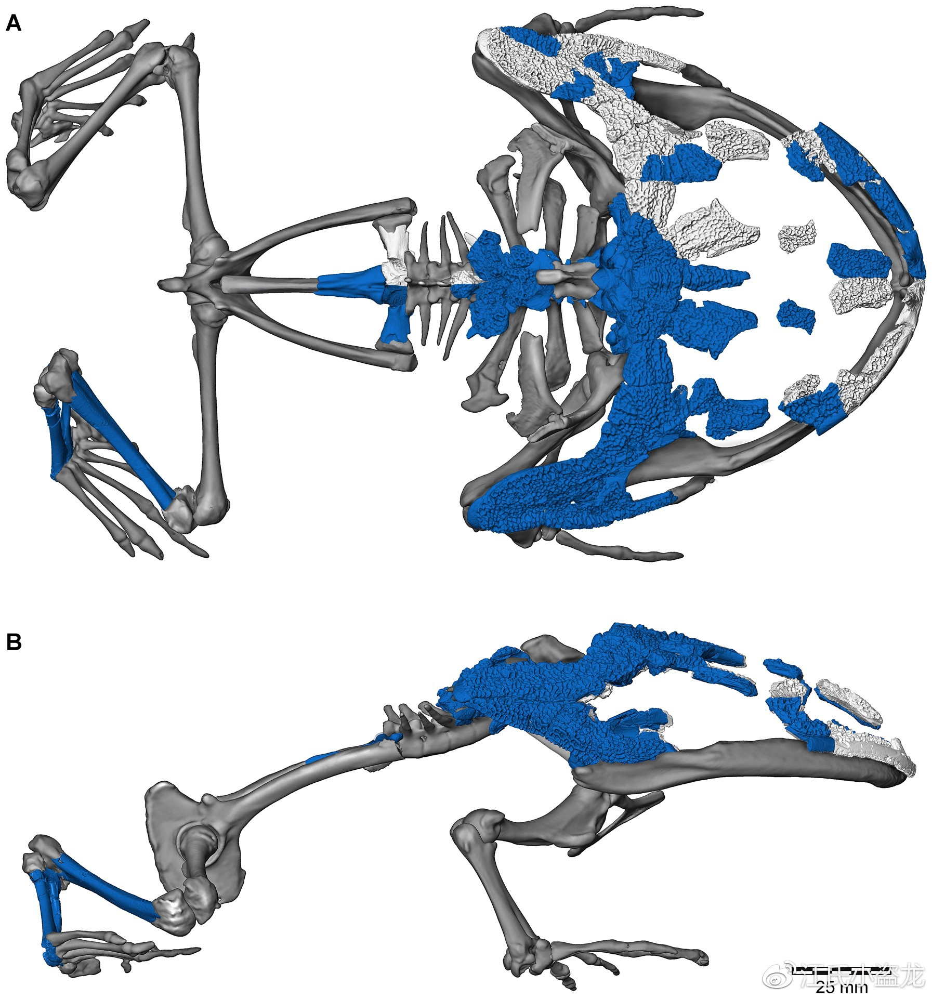

Beelzebufo
Ếch quỷ khổng lồ kỷ Phấn trắng
Tổng quan
Kỷ
Cretaceous
Họ
Leptodactylidae
Chi
Beelzebufo
Dài
4 m
Nặng
4.5 kg
Thức ăn


Beelzebufo ampinga là một loài ếch tiền sử đặc biệt lớn được phát hiện lần đầu năm 2007. Các tên thông thường được dùng trong thông tin đại chúng bao gồm ếch quỷ, cóc quỷ, và ếch địa ngục.
Nguồn: wikipedia.org
Phân bố
Quốc đảo Madagascar, Ấn Độ Dương, phía đông nam bộ châu Phi
Thông tin thêm về Beelzebufo
Tên khoa học
Năm 2008, các nhà cổ sinh vật học đã đặt tên cho chúng là Beelzebufo, là sự kết hợp của Beelzebub (một vị thần Semit trong kinh thánh, tên này có thể dịch ra là "Ác quỷ") và bufo (tiếng Latin nghĩa là "cóc"). Tên loài ampinga nghĩa là "giáp" trong ngôn ngữ Malagasy.

Kích thước
Loài ếch cổ đại Beelzebufo có thể dài tới 40 cm (16 in) và nặng 4 - 4.5 kg (9 - 10 lb) — lớn hơn bất kỳ loài nào thuộc bộ Không đuôi, hơn cả ếch Goliath loài ếch lớn nhất còn tồn tại, dài chỉ 32 cm. Beelzebufo có thể là lớn nhất từng tồn tại và có thể đạt đến kích thước tương đương với một chiếc ghế.
Ngoại hình
Beelzebufo dường như là họ hàng rất gần của một nhóm ếch Nam Mỹ được gọi là ếch 'ceratophyrines' hay 'pac-man', vì cái miệng rộng của chúng. Đầu và đôi mắt Beelzebufo rất lớn, bàn chân mạnh mẽ và xương trên vái sọ có bề mặt thô ráp, cho thấy đầu chúng có thể có vảy xương.
Chế độ ăn và săn mồi
Các chuyên gia nhận định rằng ếch Beelzebufo có chế độ ăn đa dạng. Thông qua các hóa thạch ở Madagascar cho thấy, chúng ăn chim, thằn lằn, rắn và động vật có vú nhỏ, thậm chí chúng ăn những con cá sấu nhỏ và cả khủng long con.
Dựa vào các nghiên cứu chỉ ra khi Beelzebufo có những đặc điểm giống với chi Ceratophryine, chúng được cho là đã sử dụng phương pháp "ngồi và chờ", tận dụng lớp da ngụy trang trong môi trường xung quanh, sau đó phục kích con mồi, khi phát hiện mục tiêu, chúng sử dụng lưỡi cực kỳ dính để bắt con mồi và sử dụng sức mạnh của cơ hàm với lực cắn lên tới 2.200 newton, ngoài ra thì khi cắn con mồi, loài động vật này sẽ không thể dễ dàng mà nhả đối phương.
Kỷ nguyên
Beelzebufo là một loài cóc tiền sử đã có mặt trên Trái Đất cách đây khoảng 70 triệu năm trước (Mya) vào cuối kỷ Phấn trắng. Các nhà nghiên cứu có thể phân tích ra loài ếch ngày nay chính là hậu duệ của chúng.
Phân bố
Hóa thạch Beelzebufo được tìm thấy ở địa tầng thuộc thành hệ Maevarano, loài ếch khổng lồ này sống trong các khu rừng mưa nhiệt đới ở Quốc đảo Madagascar, Ấn Độ Dương, phía đông nam bộ châu Phi.
Khám phá
Dù chúng mới chỉ được đặt tên vào năm 2008, nhưng hóa thạch của loài này lại được phát hiện vào năm 1993 tại Madagascar bởi David W. Krause từ Đại học Stony Brook University, Mỹ. Tổng cộng có 75 mẩu hóa thạch được tìm thấy, sau khi thu thập và ghép nối, các nhà cổ sinh vật học đã thu về được một bộ xương hóa thạch gần như hoàn chỉnh của loài này với chiếc hộp sọ khổng lồ. Dựa vào các hóa thạch được phát hiện, các nhà cổ sinh vật học khẳng định đây là loài ếch lớn nhất mà loài người biết đến từ trước cho tới nay và đặt tên là "Con ếch đến từ địa ngục".
Sự tuyệt chủng
Nguyên nhân gây ra sự tuyệt chủng của Beelzebufo không rõ ràng, tuy nhiên có thể có nhiều yếu tố góp phần vào quá trình này. Một số nghiên cứu cho thấy rằng sự thay đổi khí hậu và mất môi trường sống có thể là một trong những nguyên nhân chính.
Ngoài ra, sự xuất hiện của các động vật ăn thịt lớn hơn và hung hăng hơn cũng có thể là một yếu tố ảnh hưởng đến sự tuyệt chủng của Beelzebufo. Chúng có thể đã không thích nghi được với môi trường sống thay đổi nhanh chóng và sự cạnh tranh với các loài động vật khác. Tuy nhiên, vì hiện tại chúng ta chỉ có ít thông tin về Beelzebufo và nguyên nhân chính xác gây ra sự tuyệt chủng của nó vẫn đang được nghiên cứu và tranh luận.